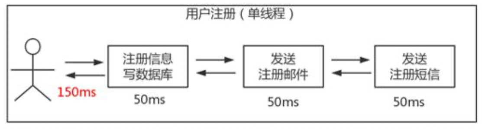
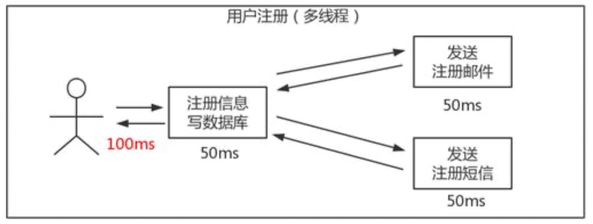
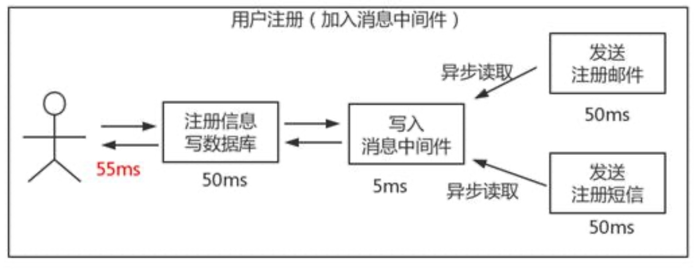
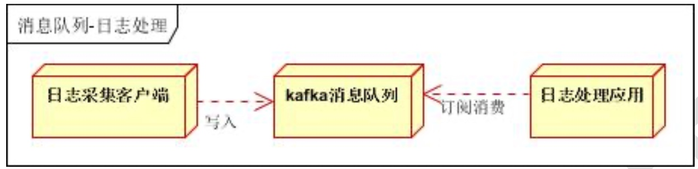
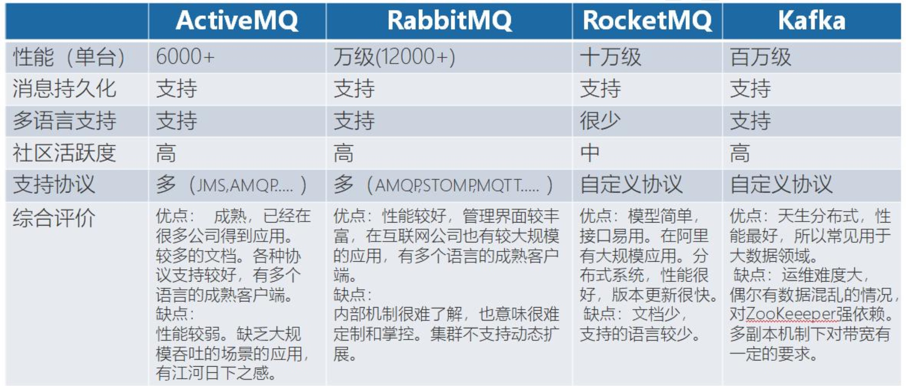

消息中间件(MQ)的定义
其实并没有标准定义。一般认为，消息中间件属于分布式系统中一个子系统，关注于数据的发送和接收，利用高效可靠的异步消息传递机制对分布式系统中的其余各个子系统进行集成。
- 高效:对于消息的处理处理速度快。
- 可靠:一般消息中间件都会有消息持久化机制和其他的机制确保消息不丢失。
- 异步:指发送完一个请求，不需要等待返回，随时可以再发送下一个请求，既不需要等待。
一句话总结，我们消息中间件不生产消息，只是消息的搬运工。
为什么要用消息中间件?
所以消息中间件主要解决分布式系统之间消息的传递，同时为分布式系统中其他子系统提供了松耦合的架构，同时还有以下好处。
低耦合
低耦合，不管是程序还是模块之间，使用消息中间件进行间接通信。
异步通信能力
异步通信能力，使得子系统之间得以充分执行自己的逻辑而无需等待。
缓冲能力
缓冲能力，消息中间件像是一个巨大的蓄水池，将高峰期大量的请求存储下来慢慢交给后台进行处理，对于秒杀业务来说尤为重要。
伸缩性
伸缩性，是指通过不断向集群中加入服务器的手段来缓解不断上升的用户并发访问压力和不断增长的数据存储需求。就像弹簧一样挂东西一样，用 户多，伸一点，用户少，浅一点，啊，不对，缩一点。是伸缩，不是深浅。衡量架构是否高伸缩性的主要标准就是是否可用多台服务器构建集群，是否 容易向集群中添加新的服务器。加入新的服务器后是否可以提供和原来服务器无差别的服务。集群中可容纳的总的服务器数量是否有限制。
扩展性
扩展性，主要标准就是在网站增加新的业务产品时，是否可以实现对现有产品透明无影响，不需要任何改动或者很少改动既有业务功能就可以上线新产品。比如用户购买电影票的应用，现在我们要增加一个功能，用户买了铁血战士的票后，随机抽取用户送异形的限量周边。怎么做到不改动用户购票功能的基础上增加这个功能。熟悉设计模式的同学，应该很眼熟，这是设计模式中的开闭原则(对扩展开放，对修改关闭)在架构层面的一个原则。
和 RPC 有何区别?
RPC 和消息中间件的场景的差异很大程度上在于就是“依赖性”和“同步性”。
- 依赖性:
比如短信通知服务并不是事交易环节必须的，并不影响下单流程，不是强依赖，所以交易系统不应该依赖短信服务。如果是 RPC 调用，短信通知服 务挂了，整个业务就挂了，这个就是依赖性导致的，而消息中间件则没有这个依赖性。
消息中间件出现以后对于交易场景可能是调用库存中心等强依赖系统执行业务，之后发布一条消息(这条消息存储于消息中间件中)。像是短信通 知服务、数据统计服务等等都是依赖于消息中间件去消费这条消息来完成自己的业务逻辑。
- 同步性:
RPC 方式是典型的同步方式，让远程调用像本地调用。消息中间件方式属于异步方式。
消息中间件有些什么使用场景?
异步处理
场景说明: 用户注册后，需要发注册邮件和注册短信。
传统的做法有两种
- 串行的方式
将注册信息写入数据库成功后，发送注册邮件，再发送注册短信。以上三个任务全部完成后，返回给客户端。
- 并行方式
将注册信息写入数据库成功后，发送注册邮件的同时，发送注册短信。以上三个任务完成后，返回给客户端。与串行的差别是，并 行的方式可以提高处理的时间。
串行
并行
上案例描述，传统的方式系统的性能(并发量，吞吐量，响应时间)会有瓶颈。如何解决这个问题呢?
引入消息队列，将不是必须的业务逻辑，异步处理。

按照以上约定，用户的响应时间相当于是注册信息写入数据库的时间，也就是 50 毫秒。注册邮件，发送短信写入消息队列后，直接返回，因此写入 消息队列的速度很快，基本可以忽略，因此用户的响应时间可能是 50 毫秒。因此架构改变后，系统的吞吐量提高到每秒 20 QPS。比串行提高了 3 倍，比 并行提高了两倍。
应用解耦
场景说明:用户下单后，订单系统需要通知库存系统。传统的做法是，订单系统调用库存系统的接口。
传统模式的缺点:
- 1) 假如库存系统无法访问，则订单减库存将失败，从而导致订单失败;
- 2) 订单系统与库存系统耦合;
如何解决以上问题呢?引入应用消息队列后的方案
订单系统:用户下单后，订单系统完成持久化处理，将消息写入消息队列，返回用户订单下单成功。
库存系统:订阅下单的消息，采用拉/推的方式，获取下单信息，库存系统根据下单信息，进行库存操作。
假如:在下单时库存系统不能正常使用。也不影响正常下单，因为下单后，订单系统写入消息队列就不再关心其他的后续操作了。实现订单系统与 库存系统的应用解耦。
流量削峰
流量削峰也是消息队列中的常用场景，一般在秒杀或团抢活动中使用广泛。
应用场景:秒杀活动，一般会因为流量过大，导致流量暴增，应用挂掉。为解决这个问题，一般需要在应用前端加入消息队列:可以控制活动的人数;可以缓解短时间内高流量压垮应用。
日志处理
日志处理是指将消息队列用在日志处理中，比如 Kafka 的应用，解决大量日志传输的问题。架构简化如下:

日志采集客户端，负责日志数据采集，定时写入 Kafka 队列:Kafka 消息队列，负责日志数据的接收，存储和转发;日志处理应用:订阅并消费 kafka 队列中的日志数据;
消息通讯
消息通讯是指，消息队列一般都内置了高效的通信机制，因此也可以用在纯的消息通讯。比如实现点对点消息队列，或者聊天室等。 点对点通讯:客户端 A 和客户端 B 使用同一队列，进行消息通讯。
聊天室通讯:客户端 A，客户端 B，客户端 N 订阅同一主题，进行消息发布和接收。实现类似聊天室效果。
常见的消息中间件比较

如果一般的业务系统要引入 MQ，怎么选型:
用户访问量在 ActiveMQ 的可承受范围内，而且确实主要是基于解耦和异步来用的，可以考虑 ActiveMQ，也比较贴近 Java 工程师的使用习惯，但是
ActiveMQ 现在停止维护了，同时 ActiveMQ 并发不高，所以业务量一定的情况下可以考虑使用。
RabbitMQ 作为一个纯正血统的消息中间件，有着高级消息协议 AMQP 的完美结合，在消息中间件中地位无可取代，但是 erlang 语言阻止了我们去深入研究和掌控，对公司而言，底层技术无法控制，但是确实是开源的，有比较稳定的支持，活跃度也高。
对自己公司技术实力有绝对自信的，可以用 RocketMQ，但是 RocketMQ 诞生比较晚，并且更新迭代很快，这个意味着在使用过程中有可能会遇到很多坑，所以如果你们公司 Java 技术不是很强，不推荐使用。
如果是大数据领域的实时计算、日志采集等场景，用 Kafka 是业内标准的，绝对没问题，社区活跃度很高，几乎是全世界这个领域的事实性规范。
从性能上来看，使用文件系统的消息中间件(kafka、rokcetMq)性能是最好的，所以基于文件系统存储的消息中间件是发展趋势。(从存储方式和效率来看 文件系统>KV存储>关系型数据库)